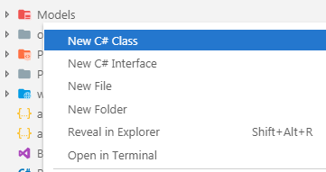

When working with data in a .NET application, you have a choice. You can either move data around the application in recordset or dataset structures, or you can represent the things (or entities) that your application is concerned with as classes, and use instances of those as containers for individual rows of data from the database.
The second approach is recommended, because it enables you to work with data in a strongly-typed manner - which has the dual benefit of offering compile-time checking thereby reducing runtime errors, and (hopefully) better quality code. It is a lot easier to reason about and maintain code where a piece of data is represented as Person.FirstName instead of ds.Tables[0].Rows[0]["FirstName"], which is the way that you would access an item of data in an ADO.NET DataSet object.
Collectively, the code representation of your application's entities is known as the Model. The Bakery application is currently concerned with products sold by the Fourth Coffee store, so the model consists of one class: Product.
Creating the model
Add a new folder to the root of the application named Models. If you have installed the "C# Extensions" extension, right-click on the folder and choose New C# Class:

Name the class Product in the dialog when prompted, and hit Enter. The generated file should have the following content:
namespace Bakery.Models
{
public class Product
{
}
}
Add the following highlighted lines to the Product class:
namespace Bakery.Models
{
public class Product
{
public int Id { get; set; }
public string Name { get; set; }
public string Description { get; set; }
public decimal Price { get; set; }
public string ImageName { get; set; }
}
}
The properties of the Product class are taken from the columns names in the Products table of the database that comes with the original sample site. Most modern web applications use a data access technology that automatically maps tables and columns in a database with an application's model classes and their properties, enabling two-way transfer of data between database and model. These components are known a Object-Relational Mappers - ORMs. Full-featured ORMs also generate the SQL commands and execute them against the database, as well as offering other services like transaction management and migrations.
The recommended ORM to use with ASP.NET Core applications is Entity Framework Core (EF Core). In the next step you will add it to the application.
Adding Entity Framework Core
EF Core includes a number of providers - components that work with specific databases. Many providers are maintained by third parties. The EF Core team maintain providers for SQL Server, and SQLite - a cross platform file-based database which will be used in this exercise.
EF Core is not included in the project template by default. It comes as a Nuget package which can be installed via the dotnet add package command. To install it with the SQLite provider into the Bakery site, execute the following command from the terminal:
dotnet add package Microsoft.EntityFrameworkCore.Sqlite
The terminal will advise you when the operation has been completed successfully.
Adding And Registering A Context
The primary EF Core component that you will use to communicate with the database is a class that derives from DbContext, known as the context. The context represents a session with a database and provides an API for communicating with it with the following capabilities:
- Database Connections
- Data operations such as querying and persistance
- Change Tracking
- Model building
- Data Mapping
- Object caching
- Transaction management
To add one, create a folder named Data in the root of the project. Then add a C# class file to it named BakeryContext.cs. Amend the content as follows:
using Bakery.Models;
using Microsoft.EntityFrameworkCore;
namespace Bakery.Data
{
public class BakeryContext : DbContext
{
public DbSet<Product> Products { get; set; }
protected override void OnConfiguring(DbContextOptionsBuilder optionsBuilder)
{
optionsBuilder.UseSqlite(@"Data source=Bakery.db");
}
}
}
This is the context that you will use to work with your data. The context has one property - a DbSet named Products. The DbSet class maps to a table in the database.
The OnConfiguring method provides a place for you to configure your context. In this case, you have configured the context to use the SQLite provider, and you have specified the connection string to be used.
When working with a context, you can instantiate an instance wherever you need it, e.g.
using(var context = new BakeryContext())
{
// do something with data
}
However, the recommended approach to working with contexts in an ASP.NET Core application is to register it with the dependency injection system and make it available as a "service". Service registration takes place in the ConfigureServices method in the Startup class.
To complete this step, open the Startup.cs file and add a using directive to bring the Bakery.Data namespace into scope:
...
using Microsoft.Extensions.Configuration;
using Microsoft.Extensions.DependencyInjection;
using Bakery.Data;
namespace Bakery
{
public class Startup
{
...
Then add the highlighted line of code to the ConfigureServices method below:
public void ConfigureServices(IServiceCollection services)
{
services.Configure<CookiePolicyOptions>(options =>
{
// This lambda determines whether user consent for non-essential cookies is needed for a given request.
options.CheckConsentNeeded = context => true;
options.MinimumSameSitePolicy = SameSiteMode.None;
});
services.AddDbContext<BakeryContext>();
services.AddMvc().SetCompatibilityVersion(CompatibilityVersion.Version_2_2);
}
Now the context can be made available within a PageModel class by injecting it via the class constructor. There is no need to manage the lifetime of the context. The AddDbContect method registers the context with a Scoped lifetime, meaning that a new one will be made available for an entire request. The services container will take care of ensuring that it is disposed of correctly.
Summary
You now have a model (small, but still a model), and an EF Core context. All you need now is a database. In the next section, you will see how EF Core migrations can be used to create one.
Next: Creating a Migration
Previous: Adding a New Page